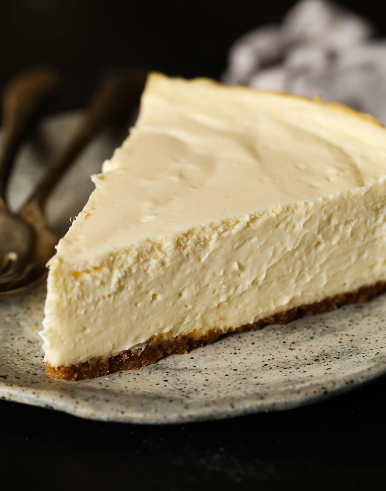

Chantal's New York Cheesecake
Home 15-Minute Greek Garbanzo Recipe

Slice of New York Cheesecake
Ingredients
For Crust:
- 12 sheets (6.64 oz, 186 gr) original graham crackers (or another type of crunchy cookie such as a digestive biscuit or biscoff cookie)
- 1/4 cup (1.75 oz, 49 gr) granulated sugar
- 1/2 cup (4 oz, 112 gr) unsalted butter, melted
For the Filling:
- 4- 8 oz packages (2 lbs, 0.9 kg) full fat cream cheese, room temperature
- 1 1/2 cups (10.5, 294 gr) granulated sugar
- 3 TBSP (0.8 oz, 22 gr) all-purpose flour
- 4 large eggs, room temperature
- 1 cup (8.5 oz, 238 gr) sour cream, room temperature
- 1 tsp vanilla extract
Instructions
- Prep: 1 1/2 hours before preparing the cheesecake, set out the cream cheese, eggs, and sour cream to come to room temperature. It is extremely important for a creamy cheesecake that your ingredients are not cold. You will need a 9" (23 cm) spring form pan for this recipe. Right before starting the crust, preheat your oven to 375 F (190 C) and position your oven rack in the center position. (Do not use the convection setting if you oven has it for this recipe)
- Prepare the Crust: Place the graham crackers in a food processor and pulse until you have cookie crumbs. Alternatively, you can put them in a ziplock bag and use a rolling pin to roll back and forth over them until they are crumbs. Place the cookie crumbs in a medium bowl and mix with the sugar and melted butter. Firmly press the crust into the bottom and about 1" (2.5 cm) up the side of a 9" (23 cm) spring form pan.
- Bake & Cool Crust: Bake the crust at 375 F (190 C) for 8 minutes. Set the crust aside to cool while you prepare the filling.
- Cream the Sugar & Cream Cheese: Increase the oven temperature to 475 F (246 C)- it needs to be preheating for at least 20 minutes before the cheesecake goes in so that it truly is hot enough. In the bowl of a stand mixer fit with a paddle attachment, or in a large bowl with a hand mixer, combine the cream cheese, sugar, and flour and beat on medium speed for 6 minutes, until light and fluffy. Turn the mixer down to low speed.
- Beat in the eggs one at a time while the mixer is running on low speed. Add the sour cream, vanilla, and lemon zest. Turn off the mixer and scrape down the sides and bottom of the bowl to ensure all of the mixture is evenly combined.
- Bake: Pour the mixture into the prepared crust. It will completely fill the spring form pan. Place on the center rack in a 475 F (246 C) oven for 8 minutes. Leave the door closed and reduce the oven temperature to 200 F (93 C) for 1 hour. Turn the oven off (again, do not open the oven door!) and leave the cheesecake in the off oven for 1 more hour.
- Cool: Let the cheesecake cool and then refrigerate for at least 6-8 hours, before removing the sides of the pan and slicing.
- Store: Cover the cheesecake with plastic wrap and store in the refrigerator for up to 1 week. To store the cheesecake in the freezer, freeze it uncovered until solid, then wrap it well in plastic wrap and/or foil and store in the freezer for up to 3 months